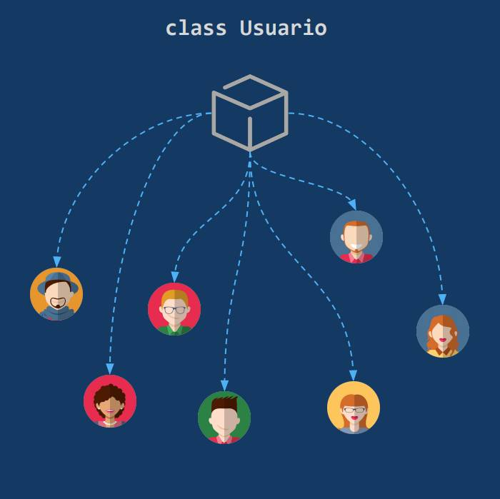

La Programación Orientada a Objetos es una paradigma de
programación que se usa mucho y es muy útil, aquí te hablaremos un poco de ella.

¡Recuerda!
La programación orientada a objetos es un paradigma de progración
que nos permite la reutilización de codigo y evita codigos comunes.
¿Qué es un paradigma?
Hablando en términos generales, a los estilos de programación se les llama paradigmas. El paradigma con el que todos aprendimos a programar es el secuencial o estructurado, aquí las instrucciones van de arriba hacia abajo, no tenemos que abstraer cosas complejas, simplemente damos ordenes una tras otra. Con la Programación Orientada a Objetos pasamos de tener un código de arriba hacia abajo en el que las funcionalidades están mezcladas y son difíciles de separar o escalar, a un sistema en el que tenemos los elementos (Objetos) separados y se comunican entre ellos.
¿Qué es la programación Orientada a Objetos?
La Programación Orientada a Objetos es el paradigma más usado en el mundo. Cada uno de los elementos de la interfaz es un objeto y cada objeto tiene datos y funcionalidad.
Exisen dos terminos importantes dentro de la Programación Orientada a Objetos las cuales son las clases y los objetos.
Conceptos importantes
Abstracción: En palabras simples, la abstracción es pensar ¿Cuáles son los atributos y métodos que necesita un objeto? Por ejemplo, un usuario que desea registrarse en una plataforma usara una plantilla en la cual ingresara datos como nombre, apellidos, correo y contraseña.
Clases: Plantillas que contienen la estructura básica de un objeto (Atributos y Métodos). En el ejemplo anterior donde realizamos el proceso de abstracción no creamos un objeto, en realidad creamos la plantilla en la que se basaran los objetos.
Objeto: Un objeto es un ente que consta de un estado y de un comportamiento, que a su vez constan respectivamente de datos almacenados y de tareas realizables durante el tiempo de ejecución.
Atributos: Propiedades que pueden asumir los objetos dentro de una clase. Estas son descripciones de los datos. Los objetos de una clase tienen los mismos atributos, pero sus valores pueden variar.
Instancia: El proceso de crear un objeto a partir de una clase se llama Instanciar y a cada objeto creado también se le puede llamar Instancia. Con una sola clase podemos crear cientos de usuarios (Instancias) sin tener que escribir código para cada uno de ellos.